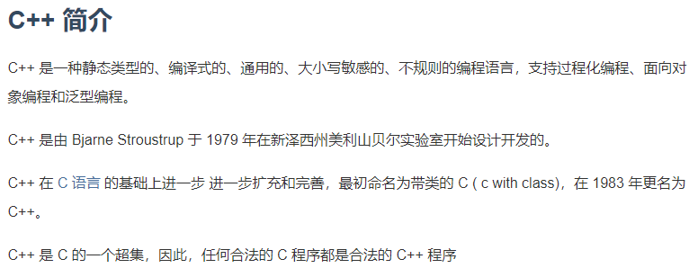
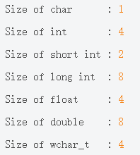
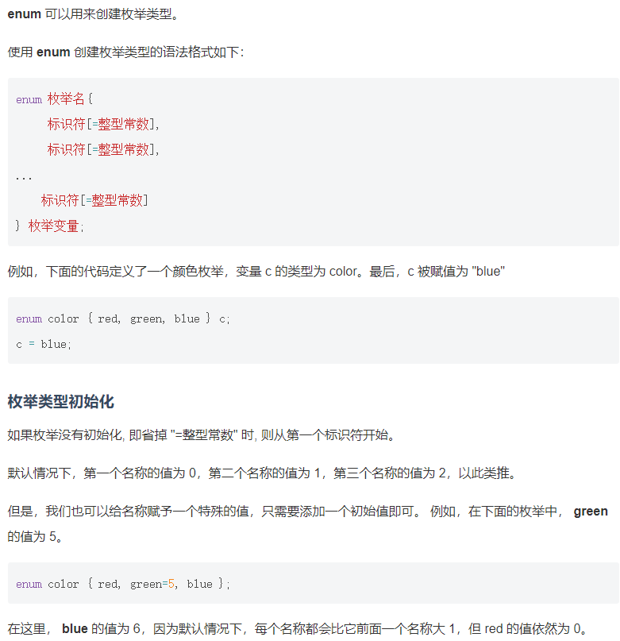
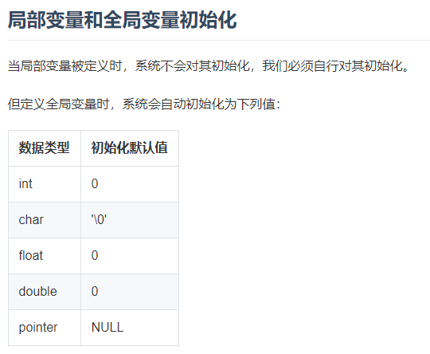
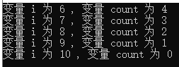
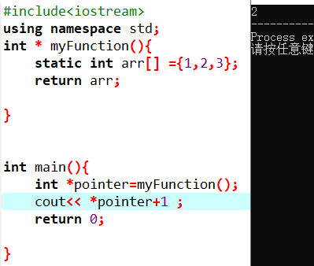
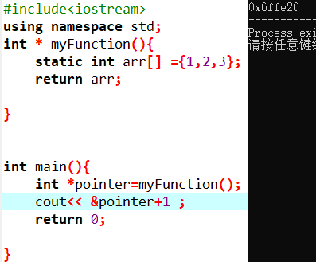
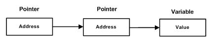

1. 使用#ifdef和#pragam once两种方式避免一个文件被include多次
(不要拼措了，是pragam，不是program)
#ifdef受到C/C++语言标准支持，不会受到编译器的限制，而#pragma once一般由编译器提供保证。
#pragma once 的兼容性不如#if def
2. 定义类结构时，需要显式public参数或方法
1 | class vec3{ |
3. dot(A ,B)
可以进行点乘运算
4.基本运算函数
1 | pow(a，b)幂运算 |
5. 基类和派生类
class derived-class : access-specifier base-class
//derived-class 派生类 base-class 基类 access-specifer 访问修饰符（private ,public, >protected）
eg class Dustman: public Worker
- 如果没有使用访问修饰符，那么默认为private
6. 纯虚函数
- 纯虚函数没有函数体
class shape{
public:
virtual double calcPerimeter()=0//纯虚函数
} - 不可实例化含有虚函数的基类
7. 抽象类
- 抽象类无法实例化对象
8. rand()函数
- rand()不需要参数，它会返回一个从0到最大随机数的任意整数，
- 如果你要产生一个0~99这100个整数的一个随机整数，可以表达为:
int num=rand()%100;
- 如果要产生一个1~100这100个整数的一个随机整数，可以表达为：
int num=rand()%100+1;
9. 基础
+++
 [image]
C++是面向对象程序设计语言
C++全面支持面向对象开发四大特性：
封装
抽象
继承
多态
{kind=link}
七种基本数据类型
- 布尔值 bool
- 字符型 char
- 整型 int
- 浮点型 float
- 双浮点型 double
- 无类型 void
- 宽字符型 wchar_t
类型修饰符
- signed
- long
- short
- unsigned
使用sizeof()获取数据类型长度：
 [image]
{kind=link}
使用typedef关键字为一个已有的数据类型取一个新的名字（别名）
typedef int fet; //告诉编译器 fet是int的别名
fet a; //使用别名声明变量
枚举类型（enumeration）是C++中一个派生的数据类型
由用户定义的若干枚举常量的集合
 [image]
{kind=link}
extern关键字在任何地方声明变量
局部变量，全局变量
全局变量：在所有函数外部定义的变量（通常在函数头部） 全局变量的值在程序的整个生命周期内都是有效的。全局变量可以被任何函数访问。也就是说，全局变量一旦声明，在整个程序中都是可用的。
局部变量：局部变量只能被函数内部或者代码块内部的语句使用。
 [image]
{kind=link}
浮点常量
float a= 3.14159
float b=314159E-5L //科学计数法写法
#define 预处理器
const关键字
- const关键字修饰的对象在程序执行期间不能被修改改变
C++存储类
C++存储类定义C++程序中 变量或函数的可见性和生命周期
register 存储类：用于定义在寄存器中而不是内存中的局部变量
register int miles; //for example
static存储类：表示编译器在程序的生命周期中保持局部变量的存储，而不需要在每次进入或离开作用域时创建或销毁。即：使用 static 修饰局部变量可以在函数调用之间保持局部变量的值
static 修饰符也可以用于修饰全局变量，这会使变量的作用域限制在声明它的文件内
当 static 用在类数据成员上时，会使仅有一个该成员的副本被 当 static 用在类数据成员上时，会使仅有一个该成员的副本被类的所有对象共享。
1 | #include <iostream> |
运行结果：
 [image]
{kind=link}
- extern 存储类：用来在另一个文件中声明一个全局变量和函数
- extern 存储类用于提供一个全局变量的引用，全局变量对所有的程序文件都是可见的。
- 使用 extern 时，对于没有初始化的变量，会把变量名指向一个之前定义过的存储位置。
- 当有多个文件且定义了一个可以在其他文件中使用的全局变量或函数时，可以在其他文件中使用extern 来得到已定义的变量或函数的引用。
- extern 修饰符通常用于当有两个或多个文件共享相同的全局变量或函数
main.cpp:
1 | #include <iostream> |
support.cpp:
1 | #include <iostream> |
- thread_local存储类：修饰的变量仅可在它在其上创建的线程上访问。
- 变量在创建线程时创建，并在销毁线程时销毁。
- 每个线程都有其自己的变量副本。
- thread_local 仅应用于数据声明和定义，thread_local 不能用于函数声明或定义。
C++ 运算符
- & ：指针运算符，返回变量的地址。
- * ：指针运算符，指向一个变量。
C++函数调用形式
| 调用类型 | 描述 |
|---|---|
| 传值调用 | 把参数的实际值复制给函数的形式参数 在这种情况下，修改函数内的形式参数对实际参数没有影响 |
| 指针调用 | 把参数的地址复制给形式参数 在函数内，该地址用于访问调用中要用到的实际参数 这意味着，修改形式参数会影响实际参数 |
| 引用调用 | 把参数的引用复制给形式参数 在函数内，该引用用于访问调用中要用到的实际参数 这意味着，修改形式参数会影响实际参数 |
- 默认情况下，C++ 使用 传值调用 来传递参数，这意味着函数内的代码不能改变用于调用函数的参数
C++ Lambda函数
未看
C++ 数组
初始化：
/*第一种：逐个初始化数组*/
double arr[3];
arr[0]=1;
arr[1]=2;
arr[2]=3;
/*第二种：声明的同时使用｛｝初始化数组*/
double arr[]={1,2,3}; //或 double arr[3]={1,2,3};多维数组
1
2
3
4
5
6//二维数组的初始化
int a[3][4] = {
{0, 1, 2, 3} , /* 初始化索引号为 0 的行 */
{4, 5, 6, 7} , /* 初始化索引号为 1 的行 */
{8, 9, 10, 11} /* 初始化索引号为 2 的行 */
};传递数组给函数（三种形式）
形式参数是一个指针：
void myFunction(int * parm){}
形式参数是一个已定义大小的数组：
void myFunction(int parm[10]){}
形式参数是一个未定义大小的数组：
void myFunction(int []parm){}
*这三种声明方式的结果是一样的，因为每种方式都会告诉编译器将要接收一个整型指针 *
- 函数返回数组
C++不允许函数返回一个完整的数组 比如：int [] myFunction(){}是错误的
但是可以指定不带索引的数组名来返回一个指向数组的指针，
void * myFunction(){} //正确
C++不支持在函数外返回局部变量的地址，除非局部变量是static变量
例如：int * myFunction(){
int arr[] myarr;
return myarr; // 错误，不能返回局部变量
}int * myFunction(){
static int arr[] myarr;
return myarr; // 可以，因为是静态局部变量
}*得到的是对应地址的值，& 得到的是相应的地址
 [程序截图]
 [程序截图]
{kind=link}
{kind=link}
C++ 指针
解地址符*
解地址符*获得一个内存地址保存的值
- 指针是一个变量，其值为另一个变量的地址，即：内存位置的直接地址
1 | int *ip; /* 一个整型的指针 */ |
- 所有指针的值的实际数据类型都是一样的，都是一个代表内存地址的长的16进制数
- 不同数据类型的指针之间唯一的不同是，指针所指向的变量或常量的数据类型不同
C++中指针的五种操作
- 1.定义一个指针变量
int *ptr_a;
- 2.把变量地址赋给指针，使用取地址符
int pi = 3.1415926;
int ptr_pi = π //这里的是声明指针并不是取解地址符 - 3.访问指针变量中可用地址的值，使用解地址符
int pi = 3.1415926;
int *ptr_pi = π
std::cout << *ptr_pi; - 4.简单的自增自减和加法减法运算符
因为指针保存的是变量的地址，而变量的地址是十六进制整形，所以也支持四种操作，而且只支持这四种 - 5.简单的比较两个指针的大小,可以使用三个比较运算符 ==、< 和 >
这三个比较运算符用于比较指针指向的内存地址是否相等，是否大于或小于
C++编程范例
- NULL空指针
声明指针变量的时候，如果没有确切的地址可以赋值，为指针变量赋一个 NULL 值是一个良好的编程习惯
- NULL空指针
- 2.指针VS数组
C++ 中的指针和数组是密切相关的，指针和数组在很多情况下是可以互换的
一个指向数组开头的指针，可以通过使用指针的算术运算或数组索引来访问数组1
2
3
4
5
6
7
8
9
10
11
12
13
14
15
16
17#include <iostream>
const int LEN=5;
int main(){
int arr[LEN]={8,16,32,64,128};
//定义指针指向数组地址
int *ptr=arr;
//还可以将上一行代替为：int *ptr; ptr=arr;
for(int i=0;i<LEN;i++){
std::cout << "arr[" << i << "]的内存地址为 ";
std::cout << ptr << std::endl;
std::cout << "var[" << i << "] 的值为 ";
std::cout << *ptr << std::endl;
// 移动到下一个位置
ptr++;
}
return 0;
}
但是
指针和数组并不是完全互换的，就是数组变量是不能做自增自减和加减法赋值给自己
int arr[LEN] = {8, 16, 32,64,128};
for (int i = 0; i < MAX; i++)
{
*arr = i; // 这是正确的语法
arr++; // 这是不正确的
}
//即：数组名可以指向数组第一个元素地址，可以当作指针使用
//但是不能够改变数组名指向数组第一元素的事实
3.指针数组
C++ 中 数组名是一个指向数组中第一个元素的常量指针*
即：double balance[50];
balance是一个指向&balance[0]的指针，即数组 balance 的第一个元素的地址
因此：*(balance + 4) 是一种访问 balance[4] 数据的合法方式4.C++指向指针的指针（多级间接寻址）
指向指针的指针，就是一个指针指向的地址保存的是另一个指针的地址，另一个指针保存的才是实际值的位置 [image]
int **var;//多级间接寻址
{kind=link}
1 | 例如： |
C++引用
引用 针对的是变量，这个要和 typedef 针对类型区分开来
可以在数据类型和变量名之间加上一个 & 符号来声明一个引用，就像下面这样
int a=8;
int &b=a;//正确，需要区别等式的左值和右值
这里&是在左值，不能看作是取地址符，而是声明引用的一种格式
&出现在右值时才是取地址符
不能直接指向数据
int &b=8；//错误
指针和引用的区别：
1.引用必须在创建时被初始化。指针可以在任何时间被初始化
int &b; // 错误
2.不存在空引用。引用必须连接到一块合法的内存，也就是不能有如下的声明
int &c = NULL; // 错误
引用的使用
引用作为参数
引用可以像指针一样作为函数的参数，使用方式和指针一模一样
相比传一般的参数更加的安全void swap(int &a,int &b){
int temp=a;
a=b;
b=temp;
}引用作为返回值
函数也可以返回一个引用，方式与返回一个指针类似，通常的做法是使用引用替代指针double nums[]={11.11, 12.58, 12.21, 25.25, 88.8};
double& setNum(int i){
return nums[i];
}
当函数返回一个引用时，返回的是一个指向返回值的隐式指针
因此，我们可以把返回引用的函数作为左值，例如
setNum(1)=203.0;
例如实例：
1 | #include <iostream> |
输出结果：203.0
** 注意事项 **
1.当返回一个引用时，被引用的对象不能超出作用域
返回一个对局部变量的引用是不合法的。
int& func() {
int q;
return q; // 在编译时发生错误
}
2.可以返回一个对静态变量的引用
int& func() {
static int x;
return x; // 安全，x 在函数作用域外依然是有效的
}